Summary
I have scraped the data from the draftexpress.com to assess data for physical and performance measurements of players drafted (first and second round of draft) from 1987 to 2014 into the NBA. Overall the most interesting insights were:
1. The average height of players is decreasing as Centers are becoming smaller while point guards are becoming bigger (perhaps in line with the conclusions of many that Basketball is becoming position-less.
2. The speed and vertical jumping abilities have been improving over the years.
All this leads us to believe that there is trend towards focusing more on a player’s versatility and less so on his height.
Average Height of players drafted
On average the height of NBA players has been decreasing over time. As the data shows the average height of the NBA player has moved from 79 inches (6’7”) to 77.5 inches (6’5.5”).
We will assess trends in height of players drafted by each position. If we do a regression for players by position we find the following coefficients:
| Position | Coefficient |
|---|---|
| Center | -0.07 |
| Power Forward | -0.02 |
| Small Forward | -0.02 |
| Shooting Guard | -0.03 |
| Point Guard | +0.03 |
Each coefficient means how much on average (in inches) the height of players changes every year. For instance, Centers (on average) have be decreasing by 0.07 inches each year where as Point Guards’ height is increasing by 0.03 inches each year. Overall this show that Centers are decreasing the fastest, point guards are the only position getting taller and Small Forwards, Power forwards and shooting guards and getting slightly smaller.
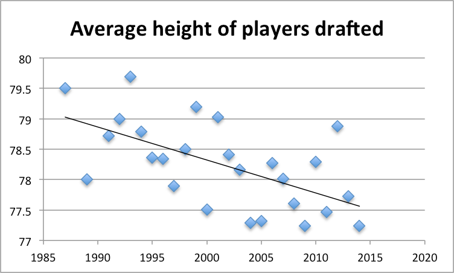
Average Height by position
Center position: 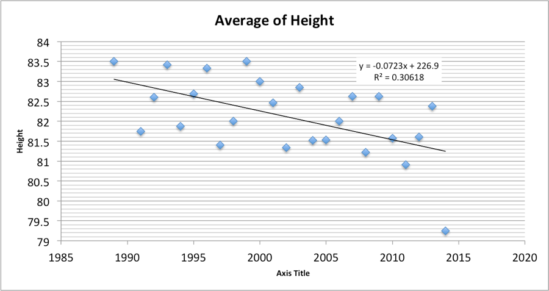
Power Forward: 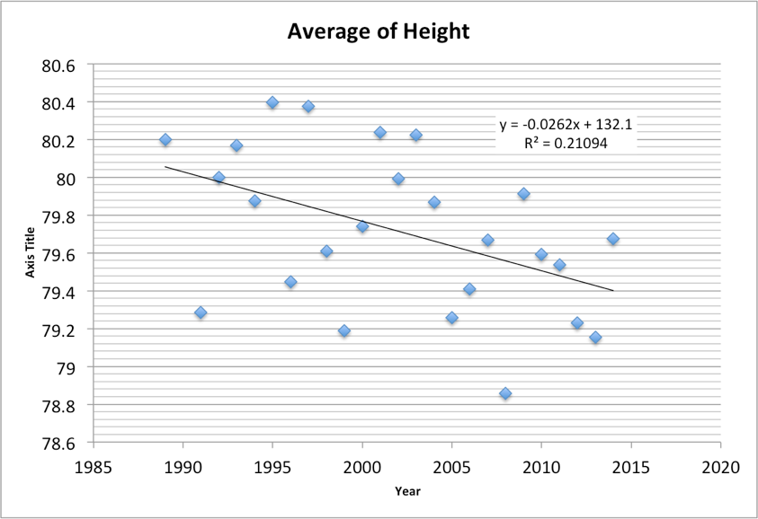
Small Forward: 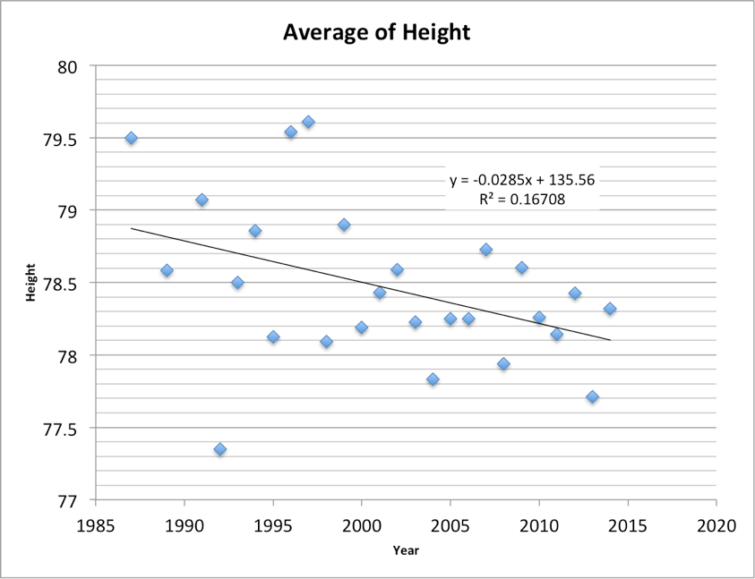
Shooting Guard: 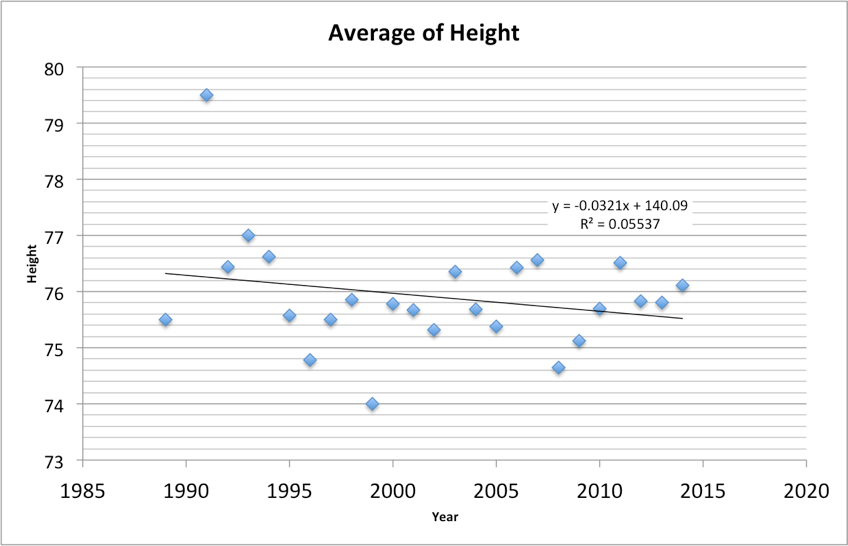
Point Guard: 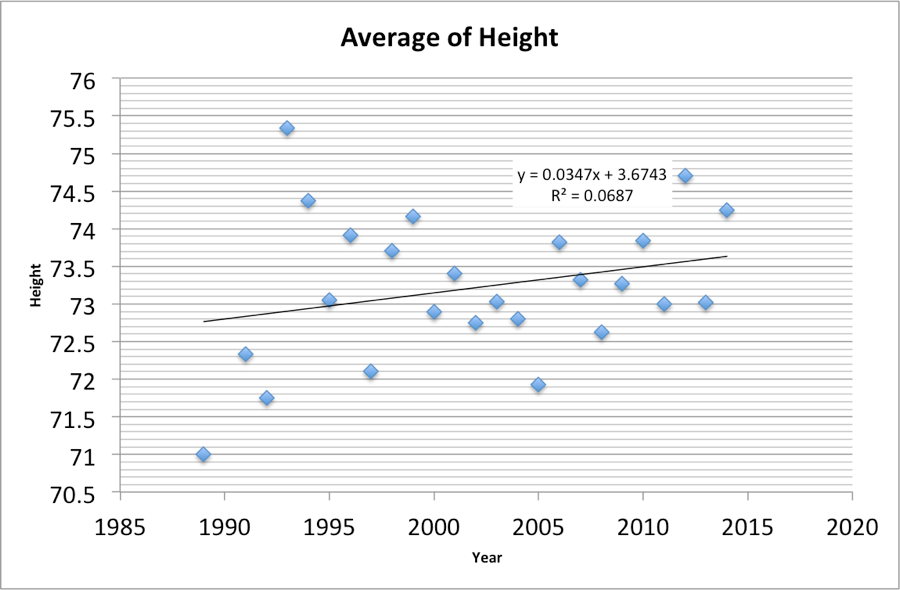
Average Wingspan of players drafted
A term borrowed from the study of flying things, wingspan is the term used to describe the length of a basketball player's arms and hands. The player stands straight with both arms fully extended out to his sides; the measure from fingertips to fingertips is his "wingspan." A longer wingspan is a highly-prized commodity in basketball players -- longer arms allow players to "play taller" than they actually are, which is particularly helpful on defense -- blocking shots, rebounding, reaching into passing lanes for steals, etc.
Given that the wingspan of an individual is correlated to their height, it is not surprising that wingspan of players is also decreasing as their average height is also decreasing.
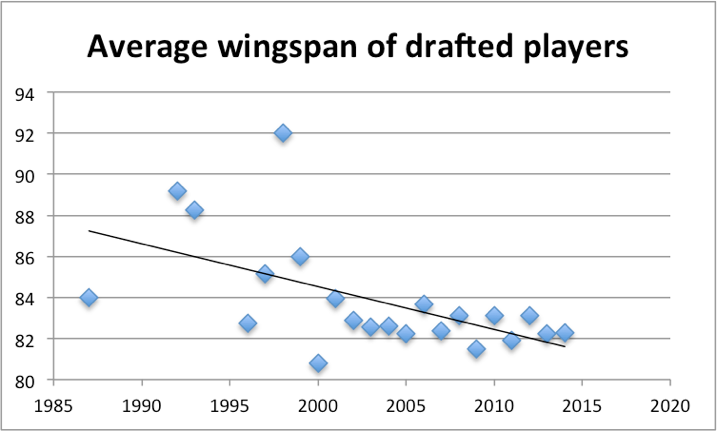
Average Weight of players drafted
On average players have are 15 pounds lighter over the 26 years of data we’ve assessed. 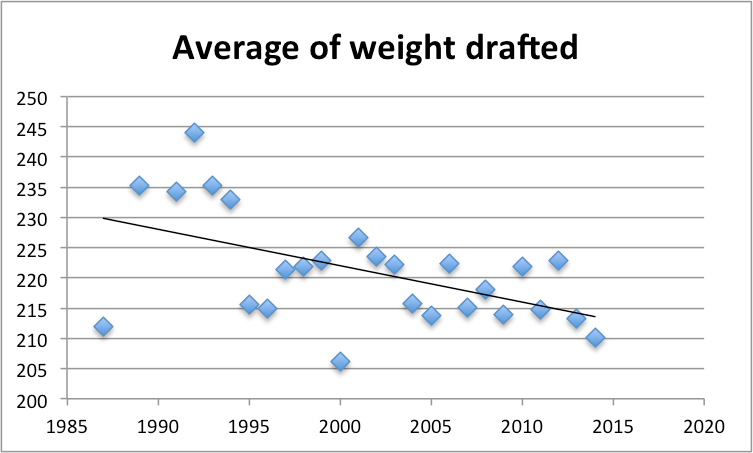
Average Body Fat of players drafted
Body fat (similar to weight is also decreasing). 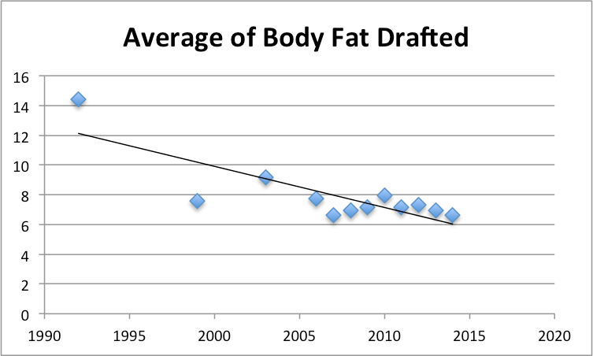
Max Vertical of players drafted
Although the players have been getting on average smaller their jumping ability has been increasing over time as during the past 15 years the average Vertical has increasing (on average) about 5 inches.
Note: A straight line regression was not used as only one data point existed for each year prior to 1998. 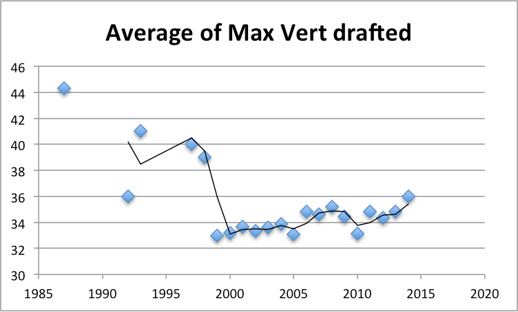
Average Sprint of players drafted
A Basketball court is 94 feet long. But a 3/4 court would be 70.5, and the test is standardized at 75 feet or 22.68 meters. The 3/4 court sprint test is the distance from the end line to the opponents free throw line in College basketball.
94 feet court minus 15 feet from free throw line to backboard minus 4 feet overhang = 75 feet.
The 3/4 Basketball Court Sprint is one of many test at the NBA combine. Like the NFL Combine, the vertical jump for explosive power is one of the tests. Other tests include: Kneeling Power Ball Throw, Lane Agility Drill, Multi-Stage Hurdle and the Max Touch test.
As can be seen the charts, the average sprint time of players has increased on average. 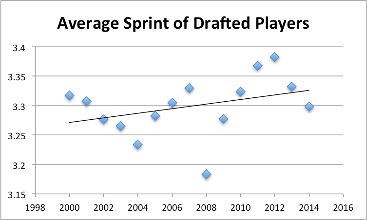
Average Bench of players drafted
In a set weight maximum bench press test, the subject performs as many bench presses as they can at a particular weight. Tests such as this one are part of the NBA pre-draft camp fitness test and the NFL combine testing. 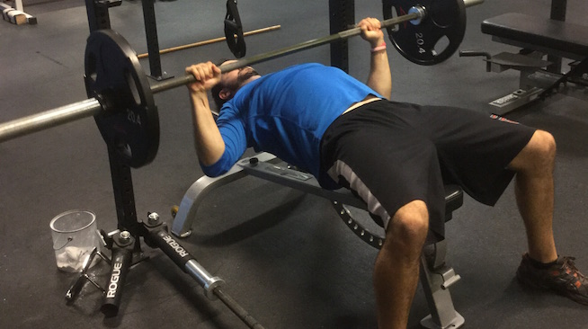 The bench test for players has been (on average) constant over the years. 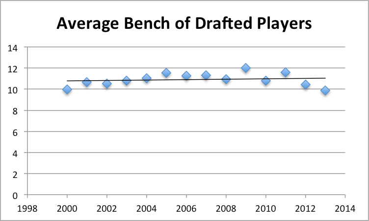 Given that the bench press is not directly related to player's versatility, this finding seems to be in-line with our hypothesis that NBA scouts are focused mostly on a player's versatility.
Average Agility of players drafted
The Lane Agility Drill run at the Pre-Draft Camp is pretty basic. The player starts on the baseline, sprints to the free throw line, slides (like defensive slides) to the opposite elbow, back peddles back to the baseline and slides back to the starting spot. The goal is to do it as fast as possible. The league measures the results in seconds. As can be seen in the chart players are getting faster over time. 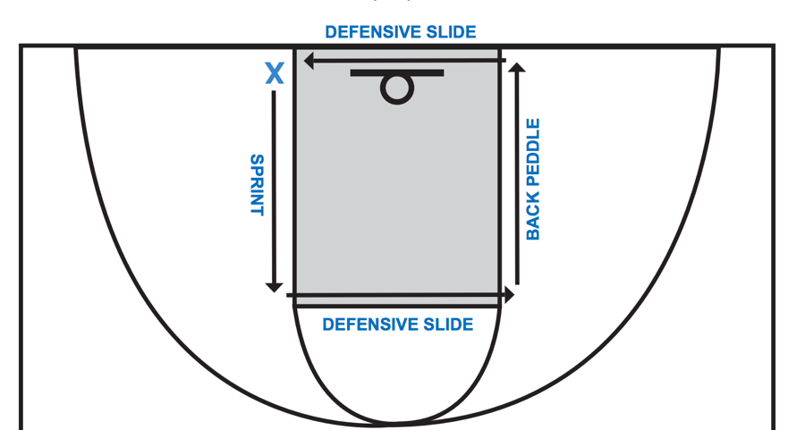 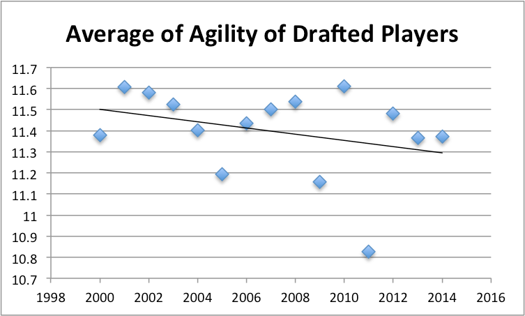